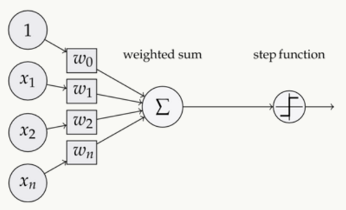

<!DOCTYPE html>
<html lang="zh">
<head><meta name="generator" content="Hexo 3.8.0">
    <meta charset="utf-8">
    
    <title>机器学习_感知机 | FEI&#39;s Blog</title>
    
    
        <meta name="keywords" content="perception">
    
    <meta name="viewport" content="width=device-width, initial-scale=1, maximum-scale=1">
    <meta name="description" content="感知机是神经网络的基本组成单元，这里有一篇文章是从零基础开始介绍感知机的，本文就是参考她实现的感知机。https://www.zybuluo.com/hanbingtao/note/433855">
<meta name="keywords" content="perception">
<meta property="og:type" content="article">
<meta property="og:title" content="机器学习_感知机">
<meta property="og:url" content="http://ff120.github.io/hexoblog/2017/05/19/技术/机器学习/机器学习_感知机/index.html">
<meta property="og:site_name" content="FEI&#39;s Blog">
<meta property="og:description" content="感知机是神经网络的基本组成单元，这里有一篇文章是从零基础开始介绍感知机的，本文就是参考她实现的感知机。https://www.zybuluo.com/hanbingtao/note/433855">
<meta property="og:locale" content="zh-Hans">
<meta property="og:image" content="http://ff120.github.io/hexoblog/2017/05/19/技术/机器学习/机器学习_感知机/2017-05-19_145930.png">
<meta property="og:updated_time" content="2019-03-28T00:54:58.025Z">
<meta name="twitter:card" content="summary">
<meta name="twitter:title" content="机器学习_感知机">
<meta name="twitter:description" content="感知机是神经网络的基本组成单元，这里有一篇文章是从零基础开始介绍感知机的，本文就是参考她实现的感知机。https://www.zybuluo.com/hanbingtao/note/433855">
<meta name="twitter:image" content="http://ff120.github.io/hexoblog/2017/05/19/技术/机器学习/机器学习_感知机/2017-05-19_145930.png">
    

    
        <link rel="alternate" href="/atom.xml" title="FEI&#39;s Blog" type="application/atom+xml">
    

    
        <link rel="icon" href="/hexoblog/favicon.ico">
    

    <link rel="stylesheet" href="/hexoblog/libs/font-awesome/css/font-awesome.min.css">
    <link rel="stylesheet" href="/hexoblog/libs/open-sans/styles.css">
    <link rel="stylesheet" href="/hexoblog/libs/source-code-pro/styles.css">

    <link rel="stylesheet" href="/hexoblog/css/style.css">
    <script src="/hexoblog/libs/jquery/2.1.3/jquery.min.js"></script>
    <script src="/hexoblog/libs/jquery/plugins/cookie/1.4.1/jquery.cookie.js"></script>
    
    
        <link rel="stylesheet" href="/hexoblog/libs/lightgallery/css/lightgallery.min.css">
    
    
        <link rel="stylesheet" href="/hexoblog/libs/justified-gallery/justifiedGallery.min.css">
    
    
    
    


    
        <script async src="//busuanzi.ibruce.info/busuanzi/2.3/busuanzi.pure.mini.js"></script>
    
</head>
</html>
<body>
    <div id="container">
        <header id="header">
    <div id="header-main" class="header-inner">
        <div class="outer">
            <a href="/hexoblog/" id="logo">
                <i class="logo"></i>
                <span class="site-title">FEI&#39;s Blog</span>
            </a>
            <nav id="main-nav">
                
                    <a class="main-nav-link" href="/hexoblog/">首页</a>
                
                    <a class="main-nav-link" href="/hexoblog/archives">归档</a>
                
                    <a class="main-nav-link" href="/hexoblog/categories">分类</a>
                
                    <a class="main-nav-link" href="/hexoblog/tags">标签</a>
                
                    <a class="main-nav-link" href="/hexoblog/about">关于</a>
                
            </nav>
            
            <div id="search-form-wrap">

    <form class="search-form">
        <input type="text" class="ins-search-input search-form-input" placeholder="Rechercher">
        <button type="submit" class="search-form-submit"></button>
    </form>
    <div class="ins-search">
    <div class="ins-search-mask"></div>
    <div class="ins-search-container">
        <div class="ins-input-wrapper">
            <input type="text" class="ins-search-input" placeholder="Type something...">
            <span class="ins-close ins-selectable"><i class="fa fa-times-circle"></i></span>
        </div>
        <div class="ins-section-wrapper">
            <div class="ins-section-container"></div>
        </div>
    </div>
</div>
<script>
(function (window) {
    var INSIGHT_CONFIG = {
        TRANSLATION: {
            POSTS: 'Articles',
            PAGES: 'Pages',
            CATEGORIES: 'Catégories',
            TAGS: 'Tags',
            UNTITLED: '(Untitled)',
        },
        ROOT_URL: '/hexoblog/',
        CONTENT_URL: '/hexoblog/content.json',
    };
    window.INSIGHT_CONFIG = INSIGHT_CONFIG;
})(window);
</script>
<script src="/hexoblog/js/insight.js"></script>

</div>
        </div>
    </div>
    <div id="main-nav-mobile" class="header-sub header-inner">
        <table class="menu outer">
            <tr>
                
                    <td><a class="main-nav-link" href="/hexoblog/">首页</a></td>
                
                    <td><a class="main-nav-link" href="/hexoblog/archives">归档</a></td>
                
                    <td><a class="main-nav-link" href="/hexoblog/categories">分类</a></td>
                
                    <td><a class="main-nav-link" href="/hexoblog/tags">标签</a></td>
                
                    <td><a class="main-nav-link" href="/hexoblog/about">关于</a></td>
                
                <td>
                    
    <div class="search-form">
        <input type="text" class="ins-search-input search-form-input" placeholder="Rechercher">
    </div>

                </td>
            </tr>
        </table>
    </div>
</header>

        <div class="outer">
            
            
                <aside id="sidebar">
   
        
    <div class="widget-wrap" id="categories">
        <h3 class="widget-title">
            <span>Catégories</span>
            &nbsp;
            <a id="allExpand" href="#">
                <i class="fa fa-angle-double-down fa-2x"></i>
            </a>
        </h3>
        
        
        
         <ul class="unstyled" id="tree"> 
                    <li class="directory">
                        <a href="#" data-role="directory">
                            <i class="fa fa-folder"></i>
                            &nbsp;
                            心理学
                        </a>
                         <ul class="unstyled" id="tree"> 
                    <li class="directory">
                        <a href="#" data-role="directory">
                            <i class="fa fa-folder"></i>
                            &nbsp;
                            记忆魔法
                        </a>
                         <ul class="unstyled" id="tree">  <li class="file"><a href="/hexoblog/2019/04/03/心理学/记忆魔法/代码记忆法/">代码记忆法</a></li>  </ul> 
                    </li> 
                     </ul> 
                    </li> 
                    
                    <li class="directory open">
                        <a href="#" data-role="directory">
                            <i class="fa fa-folder-open"></i>
                            &nbsp;
                            技术
                        </a>
                         <ul class="unstyled" id="tree"> 
                    <li class="directory">
                        <a href="#" data-role="directory">
                            <i class="fa fa-folder"></i>
                            &nbsp;
                            Web开发
                        </a>
                         <ul class="unstyled" id="tree">  <li class="file"><a href="/hexoblog/2016/06/11/技术/Web开发/后台开发_How-to-install-Laravel-framework/">How to install Laravel framework</a></li>  <li class="file"><a href="/hexoblog/2016/06/11/技术/Web开发/后台开发_laravel-4-note-01/">laravel 4 note 01</a></li>  <li class="file"><a href="/hexoblog/2016/06/11/技术/Web开发/后台开发_Make-phpStorm-friendly-to-laravel/">Make phpStorm friendly to laravel</a></li>  <li class="file"><a href="/hexoblog/2016/06/11/技术/Web开发/后台开发_sublime-Text-tricks/">sublime Text tricks</a></li>  <li class="file"><a href="/hexoblog/2016/06/11/技术/Web开发/后台开发_think-php-note-01/">think php note 01</a></li>  <li class="file"><a href="/hexoblog/2016/06/11/技术/Web开发/后台开发_think-php-note-02/">think php note 02</a></li>  <li class="file"><a href="/hexoblog/2016/06/11/技术/Web开发/后台开发_think-php-note-03/">think php note 03</a></li>  <li class="file"><a href="/hexoblog/2016/06/11/技术/Web开发/后台开发_PHP编译less文件-lessphp的使用/">PHP编译less文件-lessphp的使用</a></li>  <li class="file"><a href="/hexoblog/2016/06/11/技术/Web开发/后台开发_Lavarel-后台组件frozenode的使用/">Lavarel 后台组件frozenode的使用</a></li>  <li class="file"><a href="/hexoblog/2016/06/11/技术/Web开发/后台开发_Linux常用命令/">Linux常用命令</a></li>  <li class="file"><a href="/hexoblog/2016/06/11/技术/Web开发/后台开发_Linux主机之间同步文件/">Linux主机之间同步文件</a></li>  <li class="file"><a href="/hexoblog/2016/06/11/技术/Web开发/后台开发_PHP基本操作/">PHP基本操作</a></li>  <li class="file"><a href="/hexoblog/2016/06/11/技术/Web开发/后台开发_短信验证码的实现/">短信验证码的实现</a></li>  <li class="file"><a href="/hexoblog/2016/06/11/技术/Web开发/后台开发_配置Apache支持使用HTTPS/">配置Apache支持使用HTTPS</a></li>  <li class="file"><a href="/hexoblog/2016/06/11/技术/Web开发/测试_使用Selenium测试UI/">测试_使用Selenium测试UI</a></li>  <li class="file"><a href="/hexoblog/2016/06/11/技术/Web开发/后台开发_PhpStorm常用快捷键/">PhpStorm常用快捷键</a></li>  <li class="file"><a href="/hexoblog/2016/06/11/技术/Web开发/微信开发_微信发送消息PHP-SDK/">微信发送消息PHP SDK</a></li>  <li class="file"><a href="/hexoblog/2016/06/11/技术/Web开发/微信开发_获取地理位置/">微信获取地理位置 </a></li>  <li class="file"><a href="/hexoblog/2016/06/11/技术/Web开发/微信开发_发送模板消息的代码/">微信发送模板消息的代码</a></li>  <li class="file"><a href="/hexoblog/2016/06/11/技术/Web开发/测试_Selenium-定位元素的几种方式/">测试_Selenium定位元素的几种方式</a></li>  <li class="file"><a href="/hexoblog/2016/06/11/技术/Web开发/测试_Selenium-Action/">测试_Selenium Action</a></li>  <li class="file"><a href="/hexoblog/2016/06/11/技术/Web开发/测试_Apache-JMeter的使用/">测试_Apache JMeter的使用</a></li>  <li class="file"><a href="/hexoblog/2016/06/12/技术/Web开发/后台开发_Apache-配置虚拟主机/">Apache 配置虚拟主机</a></li>  <li class="file"><a href="/hexoblog/2016/06/23/技术/Web开发/后台开发_改进PHP的var-dump-方法使之适应显示从数据库中查出来的数据/">改进PHP的var_dump()方法使之适应显示从数据库中查出来的数据</a></li>  <li class="file"><a href="/hexoblog/2016/06/23/技术/Web开发/后台开发_PHP读写XLS/">PHP读写XLS</a></li>  <li class="file"><a href="/hexoblog/2016/06/30/技术/Web开发/前端_jQuery-EasyUI-学习笔记/">JQuery EasyUI 学习笔记</a></li>  <li class="file"><a href="/hexoblog/2016/06/30/技术/Web开发/前端_bootsharp学习笔记/">Bootsharp学习笔记</a></li>  </ul> 
                    </li> 
                    
                    <li class="directory">
                        <a href="#" data-role="directory">
                            <i class="fa fa-folder"></i>
                            &nbsp;
                            专业术语
                        </a>
                         <ul class="unstyled" id="tree">  <li class="file"><a href="/hexoblog/2017/07/24/技术/专业术语/术语/">英语</a></li>  </ul> 
                    </li> 
                    
                    <li class="directory">
                        <a href="#" data-role="directory">
                            <i class="fa fa-folder"></i>
                            &nbsp;
                            大数据
                        </a>
                         <ul class="unstyled" id="tree">  <li class="file"><a href="/hexoblog/2016/06/23/技术/大数据/大数据_Spark环境下的Kmeans-Python实现/">Spark环境下的Kmeans-Python实现</a></li>  <li class="file"><a href="/hexoblog/2017/10/06/技术/大数据/大数据基础框架/">大数据基础框架</a></li>  </ul> 
                    </li> 
                    
                    <li class="directory">
                        <a href="#" data-role="directory">
                            <i class="fa fa-folder"></i>
                            &nbsp;
                            工具
                        </a>
                         <ul class="unstyled" id="tree"> 
                    <li class="directory">
                        <a href="#" data-role="directory">
                            <i class="fa fa-folder"></i>
                            &nbsp;
                            AutoHotKey
                        </a>
                         <ul class="unstyled" id="tree">  <li class="file"><a href="/hexoblog/2018/12/02/技术/工具/AutoHotKey/AutoHotKey非常有用的脚本/">AutoHotKey非常有用的脚本</a></li>  </ul> 
                    </li> 
                    
                    <li class="directory">
                        <a href="#" data-role="directory">
                            <i class="fa fa-folder"></i>
                            &nbsp;
                            Git
                        </a>
                         <ul class="unstyled" id="tree">  <li class="file"><a href="/hexoblog/2017/05/04/技术/工具/Git/GIT的使用01-基本功能/">GIT的使用01-基本功能</a></li>  <li class="file"><a href="/hexoblog/2018/07/29/技术/工具/Git/Git查询手册/">Git 手册</a></li>  </ul> 
                    </li> 
                    
                    <li class="directory">
                        <a href="#" data-role="directory">
                            <i class="fa fa-folder"></i>
                            &nbsp;
                            Hexo
                        </a>
                         <ul class="unstyled" id="tree">  <li class="file"><a href="/hexoblog/2016/06/12/技术/工具/Hexo/Hexo的使用02-同步/">Hexo的使用02-同步</a></li>  <li class="file"><a href="/hexoblog/2016/06/13/技术/工具/Hexo/Hexo的使用01-搭建/">Hexo的使用01-搭建</a></li>  <li class="file"><a href="/hexoblog/2017/04/12/技术/工具/Hexo/Hexo的使用05-Atom编辑器/">Hexo的使用05-Atom编辑器</a></li>  <li class="file"><a href="/hexoblog/2017/04/12/技术/工具/Hexo/Hexo的使用04-数学公式/">Hexo的使用04-数学公式</a></li>  <li class="file"><a href="/hexoblog/2017/05/05/技术/工具/Hexo/Hexo的使用03-迁移/">Hexo的使用03-迁移</a></li>  <li class="file"><a href="/hexoblog/2017/07/17/技术/工具/Hexo/Hexo的使用06-使用gist存储代码片段/">Hexo中使用gist存储代码片段</a></li>  </ul> 
                    </li> 
                    
                    <li class="directory">
                        <a href="#" data-role="directory">
                            <i class="fa fa-folder"></i>
                            &nbsp;
                            Visio
                        </a>
                         <ul class="unstyled" id="tree">  <li class="file"><a href="/hexoblog/2017/05/05/技术/工具/Visio/VISIO的使用01-基础入门/">VISIO的使用01-基础入门</a></li>  </ul> 
                    </li> 
                    
                    <li class="directory">
                        <a href="#" data-role="directory">
                            <i class="fa fa-folder"></i>
                            &nbsp;
                            图片处理
                        </a>
                         <ul class="unstyled" id="tree">  <li class="file"><a href="/hexoblog/2017/05/05/技术/工具/图片处理/图片处理02-一寸照片/">图片处理02-一寸照片</a></li>  <li class="file"><a href="/hexoblog/2017/05/17/技术/工具/图片处理/图片处理01-合并多张图片/">图片处理01-合并多张图片</a></li>  </ul> 
                    </li> 
                    
                    <li class="directory">
                        <a href="#" data-role="directory">
                            <i class="fa fa-folder"></i>
                            &nbsp;
                            正则表达式
                        </a>
                         <ul class="unstyled" id="tree">  <li class="file"><a href="/hexoblog/2018/07/29/技术/工具/正则表达式/正则表达式/">正则表达式</a></li>  </ul> 
                    </li> 
                    
                    <li class="directory">
                        <a href="#" data-role="directory">
                            <i class="fa fa-folder"></i>
                            &nbsp;
                            编程IDE
                        </a>
                         <ul class="unstyled" id="tree"> 
                    <li class="directory">
                        <a href="#" data-role="directory">
                            <i class="fa fa-folder"></i>
                            &nbsp;
                            Anaconda
                        </a>
                         <ul class="unstyled" id="tree">  <li class="file"><a href="/hexoblog/2017/04/18/技术/工具/编程IDE/Anaconda/Anaconda的使用01-基础/">Anaconda的使用01-基础</a></li>  </ul> 
                    </li> 
                    
                    <li class="directory">
                        <a href="#" data-role="directory">
                            <i class="fa fa-folder"></i>
                            &nbsp;
                            JetBrainsCLion
                        </a>
                         <ul class="unstyled" id="tree">  <li class="file"><a href="/hexoblog/2017/05/04/技术/工具/编程IDE/JetBrainsCLion/JetBrainsCLion的使用01-入门/">JetBrainsCLion的使用01-入门</a></li>  </ul> 
                    </li> 
                    
                    <li class="directory">
                        <a href="#" data-role="directory">
                            <i class="fa fa-folder"></i>
                            &nbsp;
                            VSCode
                        </a>
                         <ul class="unstyled" id="tree">  <li class="file"><a href="/hexoblog/2017/07/24/技术/工具/编程IDE/VSCode/Visual-Studio-Code使用技巧/">Visual Studio Code使用技巧</a></li>  </ul> 
                    </li> 
                     </ul> 
                    </li> 
                    
                    <li class="directory">
                        <a href="#" data-role="directory">
                            <i class="fa fa-folder"></i>
                            &nbsp;
                            网络软件
                        </a>
                         <ul class="unstyled" id="tree">  <li class="file"><a href="/hexoblog/2016/06/12/技术/工具/网络软件/Windows全局代理软件Proxifier/">Windows全局代理软件Proxifier</a></li>  <li class="file"><a href="/hexoblog/2016/06/12/技术/工具/网络软件/Windows手工修改路由表/">Windows手工修改路由表</a></li>  </ul> 
                    </li> 
                     </ul> 
                    </li> 
                    
                    <li class="directory">
                        <a href="#" data-role="directory">
                            <i class="fa fa-folder"></i>
                            &nbsp;
                            数据库
                        </a>
                         <ul class="unstyled" id="tree">  <li class="file"><a href="/hexoblog/2016/06/11/技术/数据库/数据库_Redis入门/">Redis入门</a></li>  <li class="file"><a href="/hexoblog/2016/06/12/技术/数据库/数据库_使用Database-Configuration-Assist-工具创建oracle数据库/">使用Database Configuration Assist 工具创建oracle数据库</a></li>  <li class="file"><a href="/hexoblog/2017/11/02/技术/数据库/SQL/">SQL</a></li>  </ul> 
                    </li> 
                    
                    <li class="directory">
                        <a href="#" data-role="directory">
                            <i class="fa fa-folder"></i>
                            &nbsp;
                            数据结构和算法
                        </a>
                         <ul class="unstyled" id="tree">  <li class="file"><a href="/hexoblog/2017/03/21/技术/数据结构和算法/算法专题_二维数组/">算法专题_二维数组</a></li>  <li class="file"><a href="/hexoblog/2017/03/21/技术/数据结构和算法/算法专题_矩阵和图/">矩阵和用矩阵表示的图的相关问题</a></li>  <li class="file"><a href="/hexoblog/2017/03/21/技术/数据结构和算法/算法专题_位运算/">算法专题_位运算</a></li>  <li class="file"><a href="/hexoblog/2017/03/23/技术/数据结构和算法/算法专题_链表/">算法专题_链表</a></li>  <li class="file"><a href="/hexoblog/2017/04/05/技术/数据结构和算法/算法专题_动态规划/">算法专题_动态规划</a></li>  <li class="file"><a href="/hexoblog/2017/04/06/技术/数据结构和算法/算法专题_图/">算法专题_图问题</a></li>  <li class="file"><a href="/hexoblog/2017/04/08/技术/数据结构和算法/做过的算法题汇总表/">做过的算法题汇总表</a></li>  <li class="file"><a href="/hexoblog/2017/04/09/技术/数据结构和算法/算法专题_二叉树/">算法专题_二叉树</a></li>  <li class="file"><a href="/hexoblog/2017/04/09/技术/数据结构和算法/算法专题_通用树结构/">算法专题_通用树结构</a></li>  <li class="file"><a href="/hexoblog/2017/04/10/技术/数据结构和算法/算法专题_大数据和空间限制/">算法专题_大数据和空间限制</a></li>  <li class="file"><a href="/hexoblog/2017/04/10/技术/数据结构和算法/算法专题_排列组合/">算法专题_排列组合</a></li>  <li class="file"><a href="/hexoblog/2017/04/11/技术/数据结构和算法/本地代码集锦/">本地代码集锦</a></li>  <li class="file"><a href="/hexoblog/2017/04/12/技术/数据结构和算法/算法专题_栈和队列/">算法专题_栈和队列</a></li>  <li class="file"><a href="/hexoblog/2017/04/16/技术/数据结构和算法/算法专题_排序算法/">算法专题_排序算法</a></li>  <li class="file"><a href="/hexoblog/2017/04/17/技术/数据结构和算法/算法专题_算法总结/">算法专题_算法总结</a></li>  <li class="file"><a href="/hexoblog/2017/05/02/技术/数据结构和算法/算法专题_一维数组/">算法专题_一维数组</a></li>  <li class="file"><a href="/hexoblog/2017/05/05/技术/数据结构和算法/算法专题_图之网络流/">算法专题_图之网络流</a></li>  <li class="file"><a href="/hexoblog/2017/05/06/技术/数据结构和算法/算法专题_图之最短路径/">算法专题_图之最短路径</a></li>  <li class="file"><a href="/hexoblog/2017/05/06/技术/数据结构和算法/算法专题_最小生成树/">算法专题_最小生成树</a></li>  <li class="file"><a href="/hexoblog/2017/05/06/技术/数据结构和算法/算法专题_霍夫曼编码/">算法专题_霍夫曼编码(哈夫曼编码)</a></li>  <li class="file"><a href="/hexoblog/2017/05/07/技术/数据结构和算法/Kickstart-Round-B-2017/">Kickstart Round B 2017</a></li>  <li class="file"><a href="/hexoblog/2017/05/08/技术/数据结构和算法/算法专题_模运算/">算法专题_模运算</a></li>  <li class="file"><a href="/hexoblog/2017/05/09/技术/数据结构和算法/算法专题_素数问题/">算法专题_素数问题</a></li>  <li class="file"><a href="/hexoblog/2017/05/11/技术/数据结构和算法/算法专题_计算几何/">算法专题_计算几何</a></li>  <li class="file"><a href="/hexoblog/2017/05/27/技术/数据结构和算法/计蒜之道2017程序设计大赛/">计蒜之道2017程序设计大赛</a></li>  <li class="file"><a href="/hexoblog/2017/05/28/技术/数据结构和算法/算法专题_字符串匹配/">算法专题_字符串匹配</a></li>  <li class="file"><a href="/hexoblog/2017/07/12/技术/数据结构和算法/四等分数组/">四等分数组</a></li>  <li class="file"><a href="/hexoblog/2017/07/12/技术/数据结构和算法/矩阵的遍历/">矩阵的遍历</a></li>  <li class="file"><a href="/hexoblog/2017/07/20/技术/数据结构和算法/N皇后问题/">N皇后问题</a></li>  <li class="file"><a href="/hexoblog/2017/07/23/技术/数据结构和算法/算法专题_线段树/">算法专题_线段树</a></li>  <li class="file"><a href="/hexoblog/2017/07/23/技术/数据结构和算法/算法专题_树状数组/">算法专题_树状数组</a></li>  <li class="file"><a href="/hexoblog/2017/07/23/技术/数据结构和算法/算法专题_并查集/">算法专题_并查集</a></li>  <li class="file"><a href="/hexoblog/2017/07/26/技术/数据结构和算法/算法专题_链表2/">算法专题_链表2</a></li>  <li class="file"><a href="/hexoblog/2017/08/06/技术/数据结构和算法/算法专题_二叉堆/">算法专题_二叉堆</a></li>  <li class="file"><a href="/hexoblog/2017/08/07/技术/数据结构和算法/算法专题_快速排序/">算法专题_快速排序</a></li>  <li class="file"><a href="/hexoblog/2017/08/07/技术/数据结构和算法/算法专题_归并排序/">算法专题_归并排序</a></li>  <li class="file"><a href="/hexoblog/2017/08/13/技术/数据结构和算法/算法专题-hihocoder/">算法专题_hihocoder</a></li>  <li class="file"><a href="/hexoblog/2017/08/17/技术/数据结构和算法/算法专题-贪心法/">算法专题_贪心法</a></li>  <li class="file"><a href="/hexoblog/2017/08/18/技术/数据结构和算法/阿里在线测评-兔子繁殖问题/">阿里笔试</a></li>  <li class="file"><a href="/hexoblog/2017/08/22/技术/数据结构和算法/今日头条-在线编程题/">今日头条_在线编程题</a></li>  <li class="file"><a href="/hexoblog/2017/08/23/技术/数据结构和算法/算法专题-字典树-Trie树/">算法专题_字典树(Trie树)</a></li>  <li class="file"><a href="/hexoblog/2017/09/23/技术/数据结构和算法/算法专题_二叉树2/">算法专题_二叉树2</a></li>  <li class="file"><a href="/hexoblog/2017/09/27/技术/数据结构和算法/手写代码-其他/">手写代码-其他</a></li>  <li class="file"><a href="/hexoblog/2017/10/03/技术/数据结构和算法/算法专题-常见题目/">算法专题_常见题目</a></li>  </ul> 
                    </li> 
                    
                    <li class="directory open">
                        <a href="#" data-role="directory">
                            <i class="fa fa-folder-open"></i>
                            &nbsp;
                            机器学习
                        </a>
                         <ul class="unstyled" id="tree"> 
                    <li class="directory">
                        <a href="#" data-role="directory">
                            <i class="fa fa-folder"></i>
                            &nbsp;
                            深度学习
                        </a>
                         <ul class="unstyled" id="tree">  <li class="file"><a href="/hexoblog/2017/03/22/技术/机器学习/深度学习/深度学习_Theano使用技巧/">深度学习_Theano使用技巧</a></li>  <li class="file"><a href="/hexoblog/2017/04/18/技术/机器学习/深度学习/深度学习_基本概念/">深度学习_基本概念</a></li>  <li class="file"><a href="/hexoblog/2017/04/18/技术/机器学习/深度学习/深度学习_利用神经网络识别手写数字/">深度学习__利用神经网络识别手写数字</a></li>  <li class="file"><a href="/hexoblog/2017/04/19/技术/机器学习/深度学习/深度学习_反向传播算法及简单实例/">深度学习_反向传播算法及简单实例</a></li>  <li class="file"><a href="/hexoblog/2017/04/19/技术/机器学习/深度学习/深度学习_Keras使用技巧/">深度学习_Keras使用技巧</a></li>  <li class="file"><a href="/hexoblog/2017/04/20/技术/机器学习/深度学习/深度学习_使用keras实现autoencoder/">深度学习_使用keras实现autoencoder</a></li>  <li class="file"><a href="/hexoblog/2017/04/20/技术/机器学习/深度学习/深度学习_卷积神经网络/">深度学习_卷积神经网络</a></li>  <li class="file"><a href="/hexoblog/2017/04/27/技术/机器学习/深度学习/深度学习_使用autoencoder自动提取特征/">深度学习_使用autoencoder自动提取特征</a></li>  <li class="file"><a href="/hexoblog/2017/05/10/技术/机器学习/深度学习/深度学习_递归神经网络(RNN)/">深度学习_递归神经网络(RNN)</a></li>  <li class="file"><a href="/hexoblog/2017/05/10/技术/机器学习/深度学习/深度学习_限制波尔茨曼向量机(RBM)/">深度学习_限制波尔茨曼向量机(RBM)</a></li>  <li class="file"><a href="/hexoblog/2017/05/12/技术/机器学习/深度学习/深度学习_TensorFlow使用技巧/">深度学习_TensorFlow使用技巧</a></li>  </ul> 
                    </li> 
                     <li class="file"><a href="/hexoblog/2016/06/16/技术/机器学习/机器学习_Scikit-Learn-ManyClassifier/">同时使用多个分类器(Scikit-Learn)</a></li>  <li class="file"><a href="/hexoblog/2016/06/16/技术/机器学习/机器学习_范数/">机器学习_范数</a></li>  <li class="file"><a href="/hexoblog/2016/06/20/技术/机器学习/机器学习_学习路线/">机器学习_学习路线</a></li>  <li class="file"><a href="/hexoblog/2016/06/20/技术/机器学习/机器学习_手写数字识别/">机器学习_手写数字识别</a></li>  <li class="file"><a href="/hexoblog/2016/07/11/技术/机器学习/机器学习_Matplolib使用技巧/">机器学习_Matplolib使用技巧</a></li>  <li class="file"><a href="/hexoblog/2017/03/22/技术/机器学习/机器学习_人脸识别/">机器学习_人脸识别</a></li>  <li class="file"><a href="/hexoblog/2017/05/04/技术/机器学习/机器学习_Matlab使用技巧/">机器学习_Matlab使用技巧</a></li>  <li class="file"><a href="/hexoblog/2017/05/11/技术/机器学习/机器学习_时间序列预测分析算法/">机器学习_时间序列预测分析算法</a></li>  <li class="file"><a href="/hexoblog/2017/05/14/技术/机器学习/机器学习_Scikit-Learn使用技巧/">深度学习_Scikit-Learn机器学习算法的使用</a></li>  <li class="file"><a href="/hexoblog/2017/05/15/技术/机器学习/机器学习_时间序列预测の广告效果预测/">机器学习_时间序列预测の广告效果预测</a></li>  <li class="file"><a href="/hexoblog/2017/05/15/技术/机器学习/机器学习_算法汇总/">机器学习_算法汇总</a></li>  <li class="file"><a href="/hexoblog/2017/05/17/技术/机器学习/机器学习_Pandas使用技巧/">深度学习_Pandas使用技巧</a></li>  <li class="file active"><a href="/hexoblog/2017/05/19/技术/机器学习/机器学习_感知机/">机器学习_感知机</a></li>  <li class="file"><a href="/hexoblog/2017/05/19/技术/机器学习/机器学习_逻辑回归/">机器学习_逻辑回归</a></li>  <li class="file"><a href="/hexoblog/2017/05/22/技术/机器学习/机器学习_损失函数/">机器学习_损失函数</a></li>  <li class="file"><a href="/hexoblog/2017/06/03/技术/机器学习/机器学习_分类器性能的度量/">机器学习_分类器性能的度量</a></li>  <li class="file"><a href="/hexoblog/2017/06/15/技术/机器学习/机器学习_Scipy使用技巧/">机器学习_Scipy使用技巧</a></li>  <li class="file"><a href="/hexoblog/2017/06/15/技术/机器学习/机器学习_Python使用技巧/">深度学习_Python使用技巧</a></li>  <li class="file"><a href="/hexoblog/2017/07/23/技术/机器学习/机器学习-Numpy使用技巧/">机器学习_Numpy使用技巧</a></li>  <li class="file"><a href="/hexoblog/2017/10/15/技术/机器学习/KNN-with-C/">KNN with C++</a></li>  <li class="file"><a href="/hexoblog/2017/11/04/技术/机器学习/机器学习-绪论-基本概念/">机器学习-绪论-基本概念</a></li>  <li class="file"><a href="/hexoblog/2017/11/04/技术/机器学习/机器学习-第一章-逻辑回归/">机器学习-第一章-逻辑回归</a></li>  <li class="file"><a href="/hexoblog/2017/11/04/技术/机器学习/机器学习-第二章-决策树/">机器学习-第二章-决策树</a></li>  <li class="file"><a href="/hexoblog/2017/11/04/技术/机器学习/机器学习-第三章-朴素贝叶斯/">机器学习-第三章-朴素贝叶斯</a></li>  <li class="file"><a href="/hexoblog/2017/11/04/技术/机器学习/机器学习-第四章-支持向量机/">机器学习-第四章-支持向量机</a></li>  <li class="file"><a href="/hexoblog/2017/11/04/技术/机器学习/机器学习-第五章-最近邻/">机器学习-第五章-最近邻</a></li>  <li class="file"><a href="/hexoblog/2017/11/04/技术/机器学习/机器学习-第六章-kmeans/">机器学习-第六章-kmeans</a></li>  <li class="file"><a href="/hexoblog/2017/11/04/技术/机器学习/机器学习-第七章-感知机/">机器学习-第七章-感知机</a></li>  </ul> 
                    </li> 
                    
                    <li class="directory">
                        <a href="#" data-role="directory">
                            <i class="fa fa-folder"></i>
                            &nbsp;
                            编程语言
                        </a>
                         <ul class="unstyled" id="tree"> 
                    <li class="directory">
                        <a href="#" data-role="directory">
                            <i class="fa fa-folder"></i>
                            &nbsp;
                            C++
                        </a>
                         <ul class="unstyled" id="tree">  <li class="file"><a href="/hexoblog/2017/04/07/技术/编程语言/C++/C++语言技巧/">C++语言技巧</a></li>  </ul> 
                    </li> 
                     </ul> 
                    </li> 
                    
                    <li class="directory">
                        <a href="#" data-role="directory">
                            <i class="fa fa-folder"></i>
                            &nbsp;
                            计算机基础
                        </a>
                         <ul class="unstyled" id="tree"> 
                    <li class="directory">
                        <a href="#" data-role="directory">
                            <i class="fa fa-folder"></i>
                            &nbsp;
                            计算机网络
                        </a>
                         <ul class="unstyled" id="tree">  <li class="file"><a href="/hexoblog/2016/06/12/技术/计算机基础/计算机网络/网络_校园网多终端上网方案/">校园网多终端上网方案</a></li>  <li class="file"><a href="/hexoblog/2017/07/12/技术/计算机基础/计算机网络/计算机网络/">计算机网络</a></li>  </ul> 
                    </li> 
                     </ul> 
                    </li> 
                    
                    <li class="directory">
                        <a href="#" data-role="directory">
                            <i class="fa fa-folder"></i>
                            &nbsp;
                            认知神经科学
                        </a>
                         <ul class="unstyled" id="tree">  <li class="file"><a href="/hexoblog/2016/06/12/技术/认知神经科学/文献检索方法/">文献检索方法</a></li>  <li class="file"><a href="/hexoblog/2016/06/12/技术/认知神经科学/参考文献书写格式/">参考文献书写格式</a></li>  <li class="file"><a href="/hexoblog/2016/06/12/技术/认知神经科学/使用Python处理fMRI数据/">使用Python处理fMRI数据</a></li>  <li class="file"><a href="/hexoblog/2016/06/22/技术/认知神经科学/中英文对照/">中英文对照</a></li>  <li class="file"><a href="/hexoblog/2017/01/03/技术/认知神经科学/circos入门教程/">circos入门教程</a></li>  <li class="file"><a href="/hexoblog/2017/03/08/技术/认知神经科学/基于视频的车牌识别和流量统计/">基于视频的车牌识别和流量统计</a></li>  <li class="file"><a href="/hexoblog/2017/03/08/技术/认知神经科学/基于贝叶斯网络和隐性知识的AU识别研究/">基于贝叶斯网络和隐性知识的AU识别研究</a></li>  <li class="file"><a href="/hexoblog/2017/03/09/技术/认知神经科学/基于连接的脑信息解码研究/">基于连接信息的脑信息解码研究</a></li>  <li class="file"><a href="/hexoblog/2017/03/09/技术/认知神经科学/认知神经科学系列目录/">认知神经科学系列目录</a></li>  <li class="file"><a href="/hexoblog/2017/03/20/技术/认知神经科学/多被试多RUN批量预处理(SPM)/">多被试多RUN批量预处理(SPM)</a></li>  <li class="file"><a href="/hexoblog/2017/03/20/技术/认知神经科学/SPM预处理中的常用操作/">SPM预处理中的常用操作</a></li>  <li class="file"><a href="/hexoblog/2017/03/20/技术/认知神经科学/动态因果模型(DCM)的批量定义和估计/">动态因果模型(DCM)的批量定义和估计</a></li>  <li class="file"><a href="/hexoblog/2017/04/13/技术/认知神经科学/使用SPM做Second-Level分析/">使用SPM做Second_Level分析</a></li>  <li class="file"><a href="/hexoblog/2017/04/13/技术/认知神经科学/DCM模型的定义和估计/">DCM模型的定义和估计</a></li>  <li class="file"><a href="/hexoblog/2017/04/14/技术/认知神经科学/XJVIEW的使用技巧/">XJVIEW的使用技巧</a></li>  <li class="file"><a href="/hexoblog/2017/04/14/技术/认知神经科学/SPM中函数的修改和使用/">SPM中函数的修改和使用</a></li>  <li class="file"><a href="/hexoblog/2017/05/02/技术/认知神经科学/fMRI中常用的工具包/">fMRI中常用的工具包</a></li>  <li class="file"><a href="/hexoblog/2017/05/11/技术/认知神经科学/使用3D卷积神经神经网络提取脑成像数据的特征/">使用3D卷积神经神经网络提取脑成像数据的特征</a></li>  <li class="file"><a href="/hexoblog/2017/05/14/技术/认知神经科学/fMRI相关的资源汇总/">fMRI相关的资源汇总</a></li>  <li class="file"><a href="/hexoblog/2017/05/30/技术/认知神经科学/fMRI相关问题汇总/">fMRI相关问题汇总</a></li>  </ul> 
                    </li> 
                     </ul> 
                    </li> 
                    
                    <li class="directory">
                        <a href="#" data-role="directory">
                            <i class="fa fa-folder"></i>
                            &nbsp;
                            收藏夹
                        </a>
                         <ul class="unstyled" id="tree">  <li class="file"><a href="/hexoblog/2017/03/22/收藏夹/博客集锦/">博客收藏</a></li>  </ul> 
                    </li> 
                     </ul> 
    </div>
    <script>
        $(document).ready(function() {
            var iconFolderOpenClass  = 'fa-folder-open';
            var iconFolderCloseClass = 'fa-folder';
            var iconAllExpandClass = 'fa-angle-double-down';
            var iconAllPackClass = 'fa-angle-double-up';
            // Handle directory-tree expansion:
            // 左键单独展开目录
            $(document).on('click', '#categories a[data-role="directory"]', function (event) {
                event.preventDefault();

                var icon = $(this).children('.fa');
                var expanded = icon.hasClass(iconFolderOpenClass);
                var subtree = $(this).siblings('ul');
                icon.removeClass(iconFolderOpenClass).removeClass(iconFolderCloseClass);
                if (expanded) {
                    if (typeof subtree != 'undefined') {
                        subtree.slideUp({ duration: 100 });
                    }
                    icon.addClass(iconFolderCloseClass);
                } else {
                    if (typeof subtree != 'undefined') {
                        subtree.slideDown({ duration: 100 });
                    }
                    icon.addClass(iconFolderOpenClass);
                }
            });
            // 右键展开下属所有目录
            $('#categories a[data-role="directory"]').bind("contextmenu", function(event){
                event.preventDefault();
                
                var icon = $(this).children('.fa');
                var expanded = icon.hasClass(iconFolderOpenClass);
                var listNode = $(this).siblings('ul');
                var subtrees = $.merge(listNode.find('li ul'), listNode);
                var icons = $.merge(listNode.find('.fa'), icon);
                icons.removeClass(iconFolderOpenClass).removeClass(iconFolderCloseClass);
                if(expanded) {
                    subtrees.slideUp({ duration: 100 });
                    icons.addClass(iconFolderCloseClass);
                } else {
                    subtrees.slideDown({ duration: 100 });
                    icons.addClass(iconFolderOpenClass);
                }
            })
            // 展开关闭所有目录按钮
            $(document).on('click', '#allExpand', function (event) {
                event.preventDefault();
                
                var icon = $(this).children('.fa');
                var expanded = icon.hasClass(iconAllExpandClass);
                icon.removeClass(iconAllExpandClass).removeClass(iconAllPackClass);
                if(expanded) {
                    $('#sidebar .fa.fa-folder').removeClass('fa-folder').addClass('fa-folder-open')
                    $('#categories li ul').slideDown({ duration: 100 });
                    icon.addClass(iconAllPackClass);
                } else {
                    $('#sidebar .fa.fa-folder-open').removeClass('fa-folder-open').addClass('fa-folder')
                    $('#categories li ul').slideUp({ duration: 100 });
                    icon.addClass(iconAllExpandClass);
                }
            });  
        });
    </script>

    
    <div id="toTop" class="fa fa-angle-up"></div>
</aside>
            
            <section id="main"><article id="post-技术/机器学习/机器学习_感知机" class="article article-type-post" itemscope="" itemprop="blogPost">
    <div class="article-inner">
        
        
            <header class="article-header">
                
                    <div class="article-meta">
                        
    <div class="article-category">
    	<i class="fa fa-folder"></i>
        <a class="article-category-link" href="/hexoblog/categories/技术/">技术</a><i class="fa fa-angle-right"></i><a class="article-category-link" href="/hexoblog/categories/技术/机器学习/">机器学习</a>
    </div>

                        
    <div class="article-tag">
        <i class="fa fa-tag"></i>
        <a class="tag-link" href="/hexoblog/tags/perception/">perception</a>
    </div>

                        
    <div class="article-date">
        <i class="fa fa-calendar"></i>
        <a href="/hexoblog/2017/05/19/技术/机器学习/机器学习_感知机/">
            <time datetime="2017-05-19T06:40:18.000Z" itemprop="datePublished">2017-05-19</time>
        </a>
    </div>


                        
                            <i class="fa fa-bar-chart"></i>
                            <span id="busuanzi_container_site_pv"><span id="busuanzi_value_page_pv"></span></span>    
                        
                        
                            <div class="article-meta-button">
                                <a href="https://github.com/FF120/hexoblog/raw/master/source/_posts/技术/机器学习/机器学习_感知机.md"> Source </a>
                            </div>
                            <div class="article-meta-button">
                                <a href="https://github.com/FF120/hexoblog/edit/master/source/_posts/技术/机器学习/机器学习_感知机.md"> Edit </a>
                            </div>
                            <div class="article-meta-button">
                                <a href="https://github.com/FF120/hexoblog/commits/master/source/_posts/技术/机器学习/机器学习_感知机.md"> History </a>
                            </div>
                        
                    </div>
                
                
    
        <h1 class="article-title" itemprop="name">
            机器学习_感知机
        </h1>
    

            </header>
        
        
        <div class="article-entry" itemprop="articleBody">
        
        
            
                <div id="toc" class="toc-article">
                <strong class="toc-title">Catalogue</strong>
                    <ol class="toc"><li class="toc-item toc-level-2"><a class="toc-link" href="#自己动手实现感知机"><span class="toc-number">1.</span> <span class="toc-text">自己动手实现感知机</span></a></li><li class="toc-item toc-level-2"><a class="toc-link" href="#scikit-learn中的感知机"><span class="toc-number">2.</span> <span class="toc-text">scikit-learn中的感知机</span></a></li><li class="toc-item toc-level-2"><a class="toc-link" href="#keras-实现感知机"><span class="toc-number">3.</span> <span class="toc-text">keras 实现感知机</span></a></li><li class="toc-item toc-level-2"><a class="toc-link" href="#感知机的扩展"><span class="toc-number">4.</span> <span class="toc-text">感知机的扩展</span></a></li><li class="toc-item toc-level-2"><a class="toc-link" href="#更新规则的推导梯度下降法"><span class="toc-number">5.</span> <span class="toc-text">更新规则的推导(梯度下降法)</span></a></li></ol>
                </div>
            
        
        
            <p>感知机是神经网络的基本组成单元，这里有一篇文章是从零基础开始介绍感知机的，本文就是参考她实现的感知机。<a href="https://www.zybuluo.com/hanbingtao/note/433855" class="uri" target="_blank" rel="noopener">https://www.zybuluo.com/hanbingtao/note/433855</a></p>
<a id="more"></a>
<h2 id="自己动手实现感知机">自己动手实现感知机</h2>
<p>感知机是只有一层功能神经元的最简单的神经网络，它只能处理简单的线性分类。它的基本形式是：</p>
<div class="figure">

<p class="caption">perception</p>
</div>
<p>设 <span class="math inline">\(x\)</span> 表示输入向量，<span class="math inline">\(y\)</span> 表示输出，感知机其实就是实现了以下的函数的结构：</p>
<p><span class="math display">\[
y = f(w \times x + b)
\]</span></p>
<p>其中，<span class="math inline">\(w\)</span> 是一个和 <span class="math inline">\(x\)</span> 长度相同的向量，代表每个 <span class="math inline">\(x_i\)</span> 的权重，<span class="math inline">\(b\)</span> 是一个实数，表示偏置。<span class="math inline">\(f(x)\)</span> 是任意一个定义在实数域上的函数，输入是一个实数，输出是一个实数。</p>
<p>感知机的<strong>学习</strong>就是根据给出的 <span class="math inline">\(x\)</span> 和对应的 <span class="math inline">\(y\)</span>, 求解出参数 <span class="math inline">\(w\)</span> 和偏置 <span class="math inline">\(b\)</span>. 感知机的<strong>预测</strong>就是利用训练好的模型( <span class="math inline">\(w\)</span> 和 <span class="math inline">\(b\)</span> 已经确定)，给出 <span class="math inline">\(x\)</span>, 求解 <span class="math inline">\(y\)</span>.</p>
<p>开始的时候，<span class="math inline">\(w\)</span> 和 <span class="math inline">\(b\)</span> 都初始化为0，用python代码表示就是：</p>
<figure class="highlight python"><table><tr><td class="gutter"><pre><span class="line">1</span><br><span class="line">2</span><br><span class="line">3</span><br><span class="line">4</span><br><span class="line">5</span><br><span class="line">6</span><br><span class="line">7</span><br><span class="line">8</span><br><span class="line">9</span><br><span class="line">10</span><br></pre></td><td class="code"><pre><span class="line"><span class="function"><span class="keyword">def</span> <span class="title">__init__</span><span class="params">(self, input_num, activator)</span>:</span></span><br><span class="line">        <span class="string">'''</span></span><br><span class="line"><span class="string">        初始化感知器，设置输入参数的个数，以及激活函数。</span></span><br><span class="line"><span class="string">        激活函数的类型为double -&gt; double</span></span><br><span class="line"><span class="string">        '''</span></span><br><span class="line">        self.activator = activator</span><br><span class="line">        <span class="comment"># 权重向量初始化为0</span></span><br><span class="line">        self.weights = [<span class="number">0.0</span> <span class="keyword">for</span> _ <span class="keyword">in</span> range(input_num)]</span><br><span class="line">        <span class="comment"># 偏置项初始化为0</span></span><br><span class="line">        self.bias = <span class="number">0.0</span></span><br></pre></td></tr></table></figure>
<p>其中，<code>input_num</code>表示向量 <span class="math inline">\(x\)</span> 包含多少个数字，<code>activator</code> 是上式中的 <span class="math inline">\(f(x)\)</span>.</p>
<p>感知机的预测就是在已知 <span class="math inline">\(w\)</span> 和 <span class="math inline">\(b\)</span> 的情况下， 计算 <span class="math inline">\(y\)</span>.</p>
<figure class="highlight python"><table><tr><td class="gutter"><pre><span class="line">1</span><br><span class="line">2</span><br><span class="line">3</span><br><span class="line">4</span><br><span class="line">5</span><br><span class="line">6</span><br><span class="line">7</span><br><span class="line">8</span><br><span class="line">9</span><br><span class="line">10</span><br><span class="line">11</span><br><span class="line">12</span><br><span class="line">13</span><br></pre></td><td class="code"><pre><span class="line"><span class="function"><span class="keyword">def</span> <span class="title">predict</span><span class="params">(self, input_vec)</span>:</span></span><br><span class="line">        <span class="string">'''</span></span><br><span class="line"><span class="string">        输入向量，输出感知器的计算结果</span></span><br><span class="line"><span class="string">        '''</span></span><br><span class="line">        <span class="comment"># 把input_vec[x1,x2,x3...]和weights[w1,w2,w3,...]打包在一起</span></span><br><span class="line">        <span class="comment"># 变成[(x1,w1),(x2,w2),(x3,w3),...]</span></span><br><span class="line">        <span class="comment"># 然后利用map函数计算[x1*w1, x2*w2, x3*w3]</span></span><br><span class="line">        <span class="comment"># 最后利用reduce求和</span></span><br><span class="line">        <span class="keyword">return</span> self.activator(</span><br><span class="line">            reduce(<span class="keyword">lambda</span> a, b: a + b,</span><br><span class="line">                   map(<span class="keyword">lambda</span> (x, w): x * w,</span><br><span class="line">                       zip(input_vec, self.weights))</span><br><span class="line">                , <span class="number">0.0</span>) + self.bias)</span><br></pre></td></tr></table></figure>
<p>感知机的训练就是在给出 <span class="math inline">\(x\)</span> 和 <span class="math inline">\(y\)</span> 的情况下，一步一步调整 <span class="math inline">\(w\)</span> 和 <span class="math inline">\(b\)</span> 的取值，使得输入和输出尽可能的匹配。这里直接给出参数调整的方法，至于为什么会是这样，为什么这样可以保证得到结果，可以看算法导论上相关的数学推导。</p>
<p><span class="math display">\[
w_i \leftarrow w_i + \triangle w_i \\
b \leftarrow b + \triangle b \\
其中 \\
\triangle w = \beta (t-y) x_i \\
\triangle b = \beta (t-y)
\]</span></p>
<p><span class="math inline">\(y\)</span> 是感知机在当前的参数设置条件下(初始化的时候都是0) 的输出， <span class="math inline">\(y\)</span> 是训练数据实际的标签，<span class="math inline">\(\beta\)</span> 称为<strong>学习率</strong>，控制参数更新的程度大小。可以看到，参数学习的时候，感知机是一条一条的处理的训练数据的，每处理一条训练数据，参数就更新一次，先来看看权重更新的代码：</p>
<figure class="highlight python"><table><tr><td class="gutter"><pre><span class="line">1</span><br><span class="line">2</span><br><span class="line">3</span><br><span class="line">4</span><br><span class="line">5</span><br><span class="line">6</span><br><span class="line">7</span><br><span class="line">8</span><br><span class="line">9</span><br><span class="line">10</span><br><span class="line">11</span><br><span class="line">12</span><br><span class="line">13</span><br></pre></td><td class="code"><pre><span class="line"><span class="function"><span class="keyword">def</span> <span class="title">_update_weights</span><span class="params">(self, input_vec, output, label, rate)</span>:</span></span><br><span class="line">        <span class="string">'''</span></span><br><span class="line"><span class="string">        按照感知器规则更新权重</span></span><br><span class="line"><span class="string">        '''</span></span><br><span class="line">        <span class="comment"># 把input_vec[x1,x2,x3,...]和weights[w1,w2,w3,...]打包在一起</span></span><br><span class="line">        <span class="comment"># 变成[(x1,w1),(x2,w2),(x3,w3),...]</span></span><br><span class="line">        <span class="comment"># 然后利用感知器规则更新权重</span></span><br><span class="line">        delta = label - output</span><br><span class="line">        self.weights = map(</span><br><span class="line">            <span class="keyword">lambda</span> (x, w): w + rate * delta * x,</span><br><span class="line">            zip(input_vec, self.weights))</span><br><span class="line">        <span class="comment"># 更新bias</span></span><br><span class="line">        self.bias += rate * delta</span><br></pre></td></tr></table></figure>
<p>把所有的训练数据都循环处理一遍，就完成了一次<strong>迭代</strong>，通常，只处理一次参数是不能得到充分的学习的，训练的时候要根据模型的复杂程度进行多次迭代，每次迭代参数都会更新。</p>
<figure class="highlight python"><table><tr><td class="gutter"><pre><span class="line">1</span><br><span class="line">2</span><br><span class="line">3</span><br><span class="line">4</span><br><span class="line">5</span><br><span class="line">6</span><br><span class="line">7</span><br><span class="line">8</span><br><span class="line">9</span><br><span class="line">10</span><br><span class="line">11</span><br><span class="line">12</span><br><span class="line">13</span><br></pre></td><td class="code"><pre><span class="line"><span class="function"><span class="keyword">def</span> <span class="title">_one_iteration</span><span class="params">(self, input_vecs, labels, rate)</span>:</span></span><br><span class="line">        <span class="string">'''</span></span><br><span class="line"><span class="string">        一次迭代，把所有的训练数据过一遍</span></span><br><span class="line"><span class="string">        '''</span></span><br><span class="line">        <span class="comment"># 把输入和输出打包在一起，成为样本的列表[(input_vec, label), ...]</span></span><br><span class="line">        <span class="comment"># 而每个训练样本是(input_vec, label)</span></span><br><span class="line">        samples = zip(input_vecs, labels)</span><br><span class="line">        <span class="comment"># 对每个样本，按照感知器规则更新权重</span></span><br><span class="line">        <span class="keyword">for</span> (input_vec, label) <span class="keyword">in</span> samples:</span><br><span class="line">            <span class="comment"># 计算感知器在当前权重下的输出</span></span><br><span class="line">            output = self.predict(input_vec)</span><br><span class="line">            <span class="comment"># 更新权重</span></span><br><span class="line">            self._update_weights(input_vec, output, label, rate)</span><br></pre></td></tr></table></figure>
<p>上面的代码就是完成一次迭代的过程，首先用现有的感知机的参数，预测输入 <span class="math inline">\(x\)</span> 对应的输出 <span class="math inline">\(y\)</span>, 然后调用上面的参数更新函数，更新参数。</p>
<p>我们这里用<strong>迭代次数</strong>控制算法的停止时间，得到训练的方法. 当然，实际当中也可以用误差小于某一个给定的值来作为算法终止的条件。为什么要有误差，而不是百分之百的匹配上呢? 这是因为，在机器学习当中，百分之百拟合了训练数据，往往意味着过拟合了，在测试数据并不一定表现好，而我们需要的是在测试集上表现好。</p>
<figure class="highlight python"><table><tr><td class="gutter"><pre><span class="line">1</span><br><span class="line">2</span><br><span class="line">3</span><br><span class="line">4</span><br><span class="line">5</span><br><span class="line">6</span><br></pre></td><td class="code"><pre><span class="line"><span class="function"><span class="keyword">def</span> <span class="title">train</span><span class="params">(self, input_vecs, labels, iteration, rate)</span>:</span></span><br><span class="line">        <span class="string">'''</span></span><br><span class="line"><span class="string">        输入训练数据：一组向量、与每个向量对应的label；以及训练轮数、学习率</span></span><br><span class="line"><span class="string">        '''</span></span><br><span class="line">        <span class="keyword">for</span> i <span class="keyword">in</span> range(iteration):</span><br><span class="line">            self._one_iteration(input_vecs, labels, rate)</span><br></pre></td></tr></table></figure>
<p>一个简单的感知机的实现就是这样，实际使用的时候，还可以添加一些模型可视化的方法，例如输出模型参数 <span class="math inline">\(w\)</span> 和 <span class="math inline">\(b\)</span> 的方法，显示每次迭代过程的方法等等。下面是完整的代码。</p>
<figure class="highlight python"><table><tr><td class="gutter"><pre><span class="line">1</span><br><span class="line">2</span><br><span class="line">3</span><br><span class="line">4</span><br><span class="line">5</span><br><span class="line">6</span><br><span class="line">7</span><br><span class="line">8</span><br><span class="line">9</span><br><span class="line">10</span><br><span class="line">11</span><br><span class="line">12</span><br><span class="line">13</span><br><span class="line">14</span><br><span class="line">15</span><br><span class="line">16</span><br><span class="line">17</span><br><span class="line">18</span><br><span class="line">19</span><br><span class="line">20</span><br><span class="line">21</span><br><span class="line">22</span><br><span class="line">23</span><br><span class="line">24</span><br><span class="line">25</span><br><span class="line">26</span><br><span class="line">27</span><br><span class="line">28</span><br><span class="line">29</span><br><span class="line">30</span><br><span class="line">31</span><br><span class="line">32</span><br><span class="line">33</span><br><span class="line">34</span><br><span class="line">35</span><br><span class="line">36</span><br><span class="line">37</span><br><span class="line">38</span><br><span class="line">39</span><br><span class="line">40</span><br><span class="line">41</span><br><span class="line">42</span><br><span class="line">43</span><br><span class="line">44</span><br><span class="line">45</span><br><span class="line">46</span><br><span class="line">47</span><br><span class="line">48</span><br><span class="line">49</span><br><span class="line">50</span><br><span class="line">51</span><br><span class="line">52</span><br><span class="line">53</span><br><span class="line">54</span><br><span class="line">55</span><br><span class="line">56</span><br><span class="line">57</span><br><span class="line">58</span><br><span class="line">59</span><br><span class="line">60</span><br><span class="line">61</span><br></pre></td><td class="code"><pre><span class="line"><span class="class"><span class="keyword">class</span> <span class="title">Perceptron</span><span class="params">(object)</span>:</span></span><br><span class="line">    <span class="function"><span class="keyword">def</span> <span class="title">__init__</span><span class="params">(self, input_num, activator)</span>:</span></span><br><span class="line">        <span class="string">'''</span></span><br><span class="line"><span class="string">        初始化感知器，设置输入参数的个数，以及激活函数。</span></span><br><span class="line"><span class="string">        激活函数的类型为double -&gt; double</span></span><br><span class="line"><span class="string">        '''</span></span><br><span class="line">        self.activator = activator</span><br><span class="line">        <span class="comment"># 权重向量初始化为0</span></span><br><span class="line">        self.weights = [<span class="number">0.0</span> <span class="keyword">for</span> _ <span class="keyword">in</span> range(input_num)]</span><br><span class="line">        <span class="comment"># 偏置项初始化为0</span></span><br><span class="line">        self.bias = <span class="number">0.0</span></span><br><span class="line">    <span class="function"><span class="keyword">def</span> <span class="title">__str__</span><span class="params">(self)</span>:</span></span><br><span class="line">        <span class="string">'''</span></span><br><span class="line"><span class="string">        打印学习到的权重、偏置项</span></span><br><span class="line"><span class="string">        '''</span></span><br><span class="line">        <span class="keyword">return</span> <span class="string">'weights\t:%s\nbias\t:%f\n'</span> % (self.weights, self.bias)</span><br><span class="line">    <span class="function"><span class="keyword">def</span> <span class="title">predict</span><span class="params">(self, input_vec)</span>:</span></span><br><span class="line">        <span class="string">'''</span></span><br><span class="line"><span class="string">        输入向量，输出感知器的计算结果</span></span><br><span class="line"><span class="string">        '''</span></span><br><span class="line">        <span class="comment"># 把input_vec[x1,x2,x3...]和weights[w1,w2,w3,...]打包在一起</span></span><br><span class="line">        <span class="comment"># 变成[(x1,w1),(x2,w2),(x3,w3),...]</span></span><br><span class="line">        <span class="comment"># 然后利用map函数计算[x1*w1, x2*w2, x3*w3]</span></span><br><span class="line">        <span class="comment"># 最后利用reduce求和</span></span><br><span class="line">        <span class="keyword">return</span> self.activator(</span><br><span class="line">            reduce(<span class="keyword">lambda</span> a, b: a + b,</span><br><span class="line">                   map(<span class="keyword">lambda</span> (x, w): x * w,</span><br><span class="line">                       zip(input_vec, self.weights))</span><br><span class="line">                , <span class="number">0.0</span>) + self.bias)</span><br><span class="line">    <span class="function"><span class="keyword">def</span> <span class="title">train</span><span class="params">(self, input_vecs, labels, iteration, rate)</span>:</span></span><br><span class="line">        <span class="string">'''</span></span><br><span class="line"><span class="string">        输入训练数据：一组向量、与每个向量对应的label；以及训练轮数、学习率</span></span><br><span class="line"><span class="string">        '''</span></span><br><span class="line">        <span class="keyword">for</span> i <span class="keyword">in</span> range(iteration):</span><br><span class="line">            self._one_iteration(input_vecs, labels, rate)</span><br><span class="line">    <span class="function"><span class="keyword">def</span> <span class="title">_one_iteration</span><span class="params">(self, input_vecs, labels, rate)</span>:</span></span><br><span class="line">        <span class="string">'''</span></span><br><span class="line"><span class="string">        一次迭代，把所有的训练数据过一遍</span></span><br><span class="line"><span class="string">        '''</span></span><br><span class="line">        <span class="comment"># 把输入和输出打包在一起，成为样本的列表[(input_vec, label), ...]</span></span><br><span class="line">        <span class="comment"># 而每个训练样本是(input_vec, label)</span></span><br><span class="line">        samples = zip(input_vecs, labels)</span><br><span class="line">        <span class="comment"># 对每个样本，按照感知器规则更新权重</span></span><br><span class="line">        <span class="keyword">for</span> (input_vec, label) <span class="keyword">in</span> samples:</span><br><span class="line">            <span class="comment"># 计算感知器在当前权重下的输出</span></span><br><span class="line">            output = self.predict(input_vec)</span><br><span class="line">            <span class="comment"># 更新权重</span></span><br><span class="line">            self._update_weights(input_vec, output, label, rate)</span><br><span class="line">    <span class="function"><span class="keyword">def</span> <span class="title">_update_weights</span><span class="params">(self, input_vec, output, label, rate)</span>:</span></span><br><span class="line">        <span class="string">'''</span></span><br><span class="line"><span class="string">        按照感知器规则更新权重</span></span><br><span class="line"><span class="string">        '''</span></span><br><span class="line">        <span class="comment"># 把input_vec[x1,x2,x3,...]和weights[w1,w2,w3,...]打包在一起</span></span><br><span class="line">        <span class="comment"># 变成[(x1,w1),(x2,w2),(x3,w3),...]</span></span><br><span class="line">        <span class="comment"># 然后利用感知器规则更新权重</span></span><br><span class="line">        delta = label - output</span><br><span class="line">        self.weights = map(</span><br><span class="line">            <span class="keyword">lambda</span> (x, w): w + rate * delta * x,</span><br><span class="line">            zip(input_vec, self.weights))</span><br><span class="line">        <span class="comment"># 更新bias</span></span><br><span class="line">        self.bias += rate * delta</span><br></pre></td></tr></table></figure>
<p>下面我们使用写好的代码实现一个计算<code>and</code>功能的感知机。</p>
<figure class="highlight python"><table><tr><td class="gutter"><pre><span class="line">1</span><br><span class="line">2</span><br><span class="line">3</span><br><span class="line">4</span><br><span class="line">5</span><br><span class="line">6</span><br><span class="line">7</span><br><span class="line">8</span><br><span class="line">9</span><br><span class="line">10</span><br><span class="line">11</span><br><span class="line">12</span><br><span class="line">13</span><br><span class="line">14</span><br><span class="line">15</span><br><span class="line">16</span><br><span class="line">17</span><br><span class="line">18</span><br><span class="line">19</span><br></pre></td><td class="code"><pre><span class="line"><span class="function"><span class="keyword">def</span> <span class="title">and_f</span><span class="params">(x)</span>:</span></span><br><span class="line">    <span class="string">'''</span></span><br><span class="line"><span class="string">    定义激活函数f</span></span><br><span class="line"><span class="string">    '''</span></span><br><span class="line">    <span class="keyword">return</span> <span class="number">1</span> <span class="keyword">if</span> x &gt; <span class="number">0</span> <span class="keyword">else</span> <span class="number">0</span></span><br><span class="line"></span><br><span class="line"><span class="keyword">if</span> __name__ == <span class="string">'__main__'</span>:</span><br><span class="line">    <span class="comment"># 训练and感知器</span></span><br><span class="line">    X = [[<span class="number">0</span>,<span class="number">0</span>],[<span class="number">0</span>,<span class="number">1</span>],[<span class="number">1</span>,<span class="number">0</span>],[<span class="number">1</span>,<span class="number">1</span>]]</span><br><span class="line">    y = [<span class="number">0</span>,<span class="number">0</span>,<span class="number">0</span>,<span class="number">1</span>]</span><br><span class="line">    and_perception = Perceptron(<span class="number">2</span>,and_f)</span><br><span class="line">    and_perception.train(X,y,<span class="number">10</span>,<span class="number">0.1</span>)</span><br><span class="line">    <span class="comment"># 打印训练获得的权重</span></span><br><span class="line">    <span class="keyword">print</span> and_perception</span><br><span class="line">    <span class="comment"># 测试</span></span><br><span class="line">    <span class="keyword">print</span> <span class="string">'1 and 1 = %d'</span> % and_perception.predict([<span class="number">1</span>, <span class="number">1</span>])</span><br><span class="line">    <span class="keyword">print</span> <span class="string">'0 and 0 = %d'</span> % and_perception.predict([<span class="number">0</span>, <span class="number">0</span>])</span><br><span class="line">    <span class="keyword">print</span> <span class="string">'1 and 0 = %d'</span> % and_perception.predict([<span class="number">1</span>, <span class="number">0</span>])</span><br><span class="line">    <span class="keyword">print</span> <span class="string">'0 and 1 = %d'</span> % and_perception.predict([<span class="number">0</span>, <span class="number">1</span>])</span><br></pre></td></tr></table></figure>
<p>输出类似这样子： <figure class="highlight plain"><table><tr><td class="gutter"><pre><span class="line">1</span><br><span class="line">2</span><br><span class="line">3</span><br><span class="line">4</span><br><span class="line">5</span><br><span class="line">6</span><br><span class="line">7</span><br></pre></td><td class="code"><pre><span class="line">weights :[0.2, 0.1]</span><br><span class="line">bias    :-0.200000</span><br><span class="line"></span><br><span class="line">1 and 1 = 1</span><br><span class="line">0 and 0 = 0</span><br><span class="line">1 and 0 = 0</span><br><span class="line">0 and 1 = 0</span><br></pre></td></tr></table></figure></p>
<p>从中我们可以看出，对于<code>and</code>的计算全部正确。我们从训练好的模型中可以提取出实现该<code>and</code>功能的函数。</p>
<p><span class="math display">\[
y = f(0.2x_1 + 0.1x_2 -0.2)
\]</span></p>
<p><span class="math inline">\(f(x)\)</span> 就是上面代码自定义的函数，当 <span class="math inline">\(x&gt;0\)</span> 时输出1，否则输出0.</p>
<h2 id="scikit-learn中的感知机">scikit-learn中的感知机</h2>
<p>多数情况下我们不需要自己实现感知机，有很多已经写好的代码可以使用，scikit-learn中就实现了感知机。我们直接调用它的函数，看看会是什么结果。</p>
<figure class="highlight python"><table><tr><td class="gutter"><pre><span class="line">1</span><br><span class="line">2</span><br><span class="line">3</span><br><span class="line">4</span><br><span class="line">5</span><br><span class="line">6</span><br><span class="line">7</span><br><span class="line">8</span><br><span class="line">9</span><br><span class="line">10</span><br><span class="line">11</span><br><span class="line">12</span><br><span class="line">13</span><br><span class="line">14</span><br><span class="line">15</span><br><span class="line">16</span><br><span class="line">17</span><br></pre></td><td class="code"><pre><span class="line"><span class="keyword">from</span> sklearn <span class="keyword">import</span> linear_model</span><br><span class="line">lmper = linear_model.Perceptron(n_iter=<span class="number">10</span>)</span><br><span class="line">lmper.fit(X,y)</span><br><span class="line">print(lmper.coef_)</span><br><span class="line">print(lmper.intercept_)</span><br><span class="line"><span class="keyword">print</span> <span class="string">'1 and 1 = %d'</span> % lmper.predict([<span class="number">1</span>, <span class="number">1</span>])</span><br><span class="line"><span class="keyword">print</span> <span class="string">'0 and 0 = %d'</span> % lmper.predict([<span class="number">0</span>, <span class="number">0</span>])</span><br><span class="line"><span class="keyword">print</span> <span class="string">'1 and 0 = %d'</span> % lmper.predict([<span class="number">1</span>, <span class="number">0</span>])</span><br><span class="line"><span class="keyword">print</span> <span class="string">'0 and 1 = %d'</span> % lmper.predict([<span class="number">0</span>, <span class="number">1</span>])</span><br><span class="line"></span><br><span class="line"><span class="comment">## output</span></span><br><span class="line">[[ <span class="number">3.</span>  <span class="number">2.</span>]]</span><br><span class="line">[<span class="number">-4.</span>]</span><br><span class="line"><span class="number">1</span> <span class="keyword">and</span> <span class="number">1</span> = <span class="number">1</span></span><br><span class="line"><span class="number">0</span> <span class="keyword">and</span> <span class="number">0</span> = <span class="number">0</span></span><br><span class="line"><span class="number">1</span> <span class="keyword">and</span> <span class="number">0</span> = <span class="number">0</span></span><br><span class="line"><span class="number">0</span> <span class="keyword">and</span> <span class="number">1</span> = <span class="number">0</span></span><br></pre></td></tr></table></figure>
<p>我们可以得到，<code>scikit-learn</code>得到的可以用来计算<code>and</code>的函数是：</p>
<p><span class="math display">\[
 y = f(3x_1+2x_2-4)
\]</span></p>
<p>虽然和我们自己实现的不一样，但是功能都是一样的。目前还没有明白激活函数在哪里设置，所以最终参数的不同可能和激活函数的设置有关。</p>
<h2 id="keras-实现感知机">keras 实现感知机</h2>
<figure class="highlight python"><table><tr><td class="gutter"><pre><span class="line">1</span><br><span class="line">2</span><br><span class="line">3</span><br><span class="line">4</span><br><span class="line">5</span><br><span class="line">6</span><br><span class="line">7</span><br><span class="line">8</span><br><span class="line">9</span><br><span class="line">10</span><br><span class="line">11</span><br><span class="line">12</span><br><span class="line">13</span><br><span class="line">14</span><br><span class="line">15</span><br><span class="line">16</span><br><span class="line">17</span><br><span class="line">18</span><br><span class="line">19</span><br><span class="line">20</span><br><span class="line">21</span><br><span class="line">22</span><br><span class="line">23</span><br><span class="line">24</span><br><span class="line">25</span><br><span class="line">26</span><br><span class="line">27</span><br><span class="line">28</span><br><span class="line">29</span><br></pre></td><td class="code"><pre><span class="line">X = [[<span class="number">0</span>,<span class="number">0</span>],[<span class="number">0</span>,<span class="number">1</span>],[<span class="number">1</span>,<span class="number">0</span>],[<span class="number">1</span>,<span class="number">1</span>]]</span><br><span class="line">y = [<span class="number">0</span>,<span class="number">0</span>,<span class="number">0</span>,<span class="number">1</span>]</span><br><span class="line"><span class="keyword">from</span> keras.models <span class="keyword">import</span> Sequential</span><br><span class="line"><span class="keyword">from</span> keras.layers <span class="keyword">import</span> Dense, Dropout</span><br><span class="line"><span class="keyword">from</span> keras.optimizers <span class="keyword">import</span> RMSprop</span><br><span class="line"><span class="keyword">import</span> numpy <span class="keyword">as</span> np</span><br><span class="line">X = np.array(X)</span><br><span class="line">y = np.array(y)</span><br><span class="line">model = Sequential()</span><br><span class="line">model.add(Dense(<span class="number">1</span>, activation=<span class="string">'relu'</span>, input_shape=(<span class="number">2</span>,)))</span><br><span class="line">model.compile(loss=<span class="string">'mean_squared_error'</span>,</span><br><span class="line">            optimizer=<span class="string">'SGD'</span>,</span><br><span class="line">            metrics=[<span class="string">'accuracy'</span>])</span><br><span class="line">print(model.summary())</span><br><span class="line">history = model.fit(X, y,batch_size=<span class="number">128</span>, epochs=<span class="number">1</span>)</span><br><span class="line">print(model.get_weights())</span><br><span class="line"><span class="comment"># 测试</span></span><br><span class="line">print(<span class="string">'1 and 1 = %d'</span> % model.predict(np.array([<span class="number">1</span>, <span class="number">1</span>]).reshape(<span class="number">1</span>,<span class="number">2</span>)))</span><br><span class="line">print(<span class="string">'0 and 0 = %d'</span> % model.predict(np.array([<span class="number">0</span>, <span class="number">0</span>]).reshape(<span class="number">1</span>,<span class="number">2</span>)))</span><br><span class="line">print(<span class="string">'1 and 0 = %d'</span> % model.predict(np.array([<span class="number">1</span>, <span class="number">0</span>]).reshape(<span class="number">1</span>,<span class="number">2</span>)))</span><br><span class="line">print(<span class="string">'0 and 1 = %d'</span> % model.predict(np.array([<span class="number">0</span>, <span class="number">1</span>]).reshape(<span class="number">1</span>,<span class="number">2</span>)))</span><br><span class="line"></span><br><span class="line"><span class="comment"># output</span></span><br><span class="line">[array([[<span class="number">-1.21217406</span>],</span><br><span class="line">       [<span class="number">-1.16362488</span>]], dtype=float32), array([ <span class="number">0.</span>], dtype=float32)]</span><br><span class="line"><span class="number">1</span> <span class="keyword">and</span> <span class="number">1</span> = <span class="number">0</span></span><br><span class="line"><span class="number">0</span> <span class="keyword">and</span> <span class="number">0</span> = <span class="number">0</span></span><br><span class="line"><span class="number">1</span> <span class="keyword">and</span> <span class="number">0</span> = <span class="number">0</span></span><br><span class="line"><span class="number">0</span> <span class="keyword">and</span> <span class="number">1</span> = <span class="number">0</span></span><br></pre></td></tr></table></figure>
<p>使用神经网络训练的并没有达到最优的结果，可能和我们训练的样本过少有关系。我们同样得到了训练出来的感知机：</p>
<p><span class="math display">\[
y = f(-1.2121x_1-1.1636x_2+0)
\]</span></p>
<p>不过这里只有75%的准确率，现在还不清楚里面的原理。</p>
<h2 id="感知机的扩展">感知机的扩展</h2>
<p>上面我们介绍的感知机使用了如下的激活函数：</p>
<p><span class="math display">\[
f(x)=\begin{cases}
        0   &amp;  \text{x&gt;0}\\
        1   &amp;  \text{x&lt;=0}
      \end{cases}
\]</span></p>
<p>这导致我们的输出智能是<code>0</code>,<code>1</code>,我们可以改变一下这个函数，使得输出的值是连续的，这样就可以用来解决回归的问题了。例如，我们直接使用 <span class="math inline">\(f(x)=x\)</span> 来作为激活函数。这样，我们实现了下面这样的线性函数：</p>
<p><span class="math display">\[
 y = w * x + b
\]</span></p>
<figure class="highlight python"><table><tr><td class="gutter"><pre><span class="line">1</span><br><span class="line">2</span><br><span class="line">3</span><br><span class="line">4</span><br><span class="line">5</span><br><span class="line">6</span><br><span class="line">7</span><br><span class="line">8</span><br><span class="line">9</span><br><span class="line">10</span><br><span class="line">11</span><br><span class="line">12</span><br><span class="line">13</span><br><span class="line">14</span><br><span class="line">15</span><br><span class="line">16</span><br><span class="line">17</span><br><span class="line">18</span><br><span class="line">19</span><br><span class="line">20</span><br><span class="line">21</span><br></pre></td><td class="code"><pre><span class="line"><span class="function"><span class="keyword">def</span> <span class="title">fx</span><span class="params">(x)</span>:</span></span><br><span class="line">    <span class="keyword">return</span> x</span><br><span class="line"></span><br><span class="line">X = [[<span class="number">5</span>], [<span class="number">3</span>], [<span class="number">8</span>], [<span class="number">1.4</span>], [<span class="number">10.1</span>]]</span><br><span class="line">y = [<span class="number">5500</span>, <span class="number">2300</span>, <span class="number">7600</span>, <span class="number">1800</span>, <span class="number">11400</span>]</span><br><span class="line">linear_perception = Perceptron(<span class="number">1</span>,fx)</span><br><span class="line">linear_perception.train(X,y,<span class="number">10</span>,<span class="number">0.1</span>)</span><br><span class="line"><span class="keyword">print</span> linear_perception</span><br><span class="line"><span class="keyword">print</span> <span class="string">'Work 3.4 years, monthly salary = %.2f'</span> % linear_perception.predict([<span class="number">3.4</span>])</span><br><span class="line"><span class="keyword">print</span> <span class="string">'Work 15 years, monthly salary = %.2f'</span> % linear_perception.predict([<span class="number">15</span>])</span><br><span class="line"><span class="keyword">print</span> <span class="string">'Work 1.5 years, monthly salary = %.2f'</span> % linear_perception.predict([<span class="number">1.5</span>])</span><br><span class="line"><span class="keyword">print</span> <span class="string">'Work 6.3 years, monthly salary = %.2f'</span> % linear_perception.predict([<span class="number">6.3</span>])</span><br><span class="line"></span><br><span class="line"><span class="comment"># output</span></span><br><span class="line">weights :[<span class="number">765.63113396072</span>]</span><br><span class="line">bias    :<span class="number">-778.455331</span></span><br><span class="line"></span><br><span class="line">Work <span class="number">3.4</span> years, monthly salary = <span class="number">1824.69</span></span><br><span class="line">Work <span class="number">15</span> years, monthly salary = <span class="number">10706.01</span></span><br><span class="line">Work <span class="number">1.5</span> years, monthly salary = <span class="number">369.99</span></span><br><span class="line">Work <span class="number">6.3</span> years, monthly salary = <span class="number">4045.02</span></span><br></pre></td></tr></table></figure>
<p>上面训练了一个简单的一次线性函数：</p>
<p><span class="math display">\[
y = 765x-778
\]</span></p>
<h2 id="更新规则的推导梯度下降法">更新规则的推导(梯度下降法)</h2>
<p>上面介绍感知机的时候，我们直接给出了参数更新的方法，但是没有说明这个方法是如何得出来的，现在我们给出推导的方法。</p>
<p><span class="math display">\[
w_i \leftarrow w_i + \triangle w_i \\
b \leftarrow b + \triangle b \\
其中 \\
\triangle w = \beta (t-y) x_i \\
\triangle b = \beta (t-y)
\]</span></p>
<p>设模型的输出是 $ $, 真实的标签是 <span class="math inline">\(y\)</span>, 那么我们训练模型的目的是使得 <span class="math inline">\(\hat y\)</span> 尽可能的接近 <span class="math inline">\(y\)</span>, 那么，如何度量它们之间的接近程度呢？ 一个简单的想法就是使用平方和. <span class="math display">\[
E = \sum_{i=1}^{n}( {\hat y_i}-y_i )^2
\]</span></p>
<p>有了损失函数，接下来我们的目标就是使得该函数达到极小值，这样 <span class="math inline">\(\hat y\)</span>和 <span class="math inline">\(y\)</span> 之间就尽可能接近了。</p>
<p>如何求解函数的极小值呢，我们可以求函数的导数，令导数等于0，这样我们就能找到它的极值点。不幸的是，并不是所有的函数我们都能求解出导数的，所以求导数的方法并没有什么普适性，计算机有强大的计算能力，所以遇到这类问题，基本上都使用数值计算的方法解决。</p>
<p>我们直到一个函数的梯度表示一个函数上升最快的方向，那么她的反方向就是下降最快的方向，而梯度的计算就是函数对每一个变量的偏导数，这个我们可以事先计算出来。然后随机初始化一个 <span class="math inline">\(x\)</span>, 求解<span class="math inline">\(f(x)\)</span> 的值，然后朝着梯度下降的方向更新 <span class="math inline">\(x\)</span>, 经过无数次迭代之后，我们就能找到函数的极小值点对应的那个 <span class="math inline">\(x\)</span>.</p>
<p>$ y = f(w*x+b)$ , 令<span class="math inline">\(x_0 = 1,w_0=b\)</span>, 可以把它写成统一的形式<span class="math inline">\(\hat y = f(w*x)\)</span> , 这样我们最终的目标是求解 <span class="math inline">\(w\)</span>, 所以我们把 <span class="math inline">\(E\)</span> 看作 <span class="math inline">\(w\)</span> 的函数，这样优化函数变形为：</p>
<p><span class="math display">\[
E(w) = \sum_{i=1}^n ({\hat y_i}-y_i)^2
\]</span></p>
<p>求偏导的时候2次方会有一个系数2，所以我们把函数乘以 <span class="math inline">\(\dfrac 1 2\)</span>, 消除求导时候的系数，这样优化的目标函数变为：</p>
<p><span class="math display">\[
E(w) =\dfrac 1 2 \sum_{i=1}^n ({\hat y_i}-y_i)^2
\]</span></p>
<p>下面就是求这个函数对 <span class="math inline">\(w\)</span> 的梯度了。首先我们复习一下链式求导法则。</p>
<p><span class="math display">\[
\dfrac {\partial E(w)} {\partial w} = \dfrac {E(w)} {\partial \hat y} * \dfrac {\partial \hat y} {\partial w}
\]</span></p>
<p>根据以上的链式求导法则，我们可以求解得到目标函数的梯度：</p>
<p><span class="math display">\[
\Delta {E(w)} = - \sum_{i=1}^n (y^i-\hat y^i)x
\]</span></p>
<p>有了函数的梯度，就可以按照梯度的方向更新参数了。</p>
<p><span class="math display">\[
w_{new} = w_{old} + \beta  \sum_{i=1}^n (y^i-\hat y^i)x^i
\]</span></p>
<p>式子中，<span class="math inline">\(y^i\)</span> 是真实的标签值，<span class="math inline">\(x\)</span>是训练的样本， <span class="math inline">\(\beta\)</span>是学习率，也就是每次梯度下降的步长。这个步长的设置是一个技术活，太小的话，收敛太慢，太大的话，一不小心就过了，找不到最小的位置。</p>
<p>把上面感知机的参数更新规则拿过来对比：</p>
<p><span class="math display">\[
w_i \leftarrow w_i + \triangle w_i \\
b \leftarrow b + \triangle b \\
其中 \\
\triangle w = \beta (t-y) x_i \\
\triangle b = \beta (t-y)
\]</span></p>
<p>我们发现二者是完全一致的， 原来，感知机也是按照梯度下降的方向更新参数的。</p>
<p>需要注意的是，我们上面介绍的是最朴素的梯度下降法，实际应用中，经常使用随机梯度下降法，就是每次更新参数的时候，并不是把所有的训练数据都遍历一边再计算一次更新，而是每一个样本都计算一次更新，这样可能会导致有使参数的更新不是朝着下降的方向，但是实际经验证明，总体趋势上还是下降的，并且这样的方法计算开销小，还很有可能收敛速度更快。</p>

            </div>
        
        <footer class="article-footer">
        </footer>
    </div>
</article>


    
<nav id="article-nav">
    
        <a href="/hexoblog/2017/05/19/技术/机器学习/机器学习_逻辑回归/" id="article-nav-newer" class="article-nav-link-wrap">
            <strong class="article-nav-caption">Plus récent</strong>
            <div class="article-nav-title">
                
                    机器学习_逻辑回归
                
            </div>
        </a>
    
    
        <a href="/hexoblog/2017/05/17/技术/机器学习/机器学习_Pandas使用技巧/" id="article-nav-older" class="article-nav-link-wrap">
            <strong class="article-nav-caption">Plus ancien</strong>
            <div class="article-nav-title">深度学习_Pandas使用技巧</div>
        </a>
    
</nav>


    
    


<!-- baidu url auto push script -->
<script type="text/javascript">
    !function(){var e=/([http|https]:\/\/[a-zA-Z0-9\_\.]+\.baidu\.com)/gi,r=window.location.href,o=document.referrer;if(!e.test(r)){var n="//api.share.baidu.com/s.gif";o?(n+="?r="+encodeURIComponent(document.referrer),r&&(n+="&l="+r)):r&&(n+="?l="+r);var t=new Image;t.src=n}}(window);
</script>     
</section>
        </div>
        <footer id="footer">
    <div class="outer">
        <div id="footer-info" class="inner">
            FF120 &copy; 2019 
            <a rel="license" href="http://creativecommons.org/licenses/by-nc-nd/4.0/"></a>
            <br> Powered by <a href="http://hexo.io/" target="_blank">Hexo</a>. Theme - <a href="https://github.com/zthxxx/hexo-theme-Wikitten">wikitten</a>
            
                <br>
                <span id="busuanzi_container_site_pv"><i class="fa fa-eye"></i> <span id="busuanzi_value_site_pv"></span></span>
                &nbsp;|&nbsp;
                <span id="busuanzi_container_site_pv"><i class="fa fa-user"></i> <span id="busuanzi_value_site_uv"></span></span>
            
        </div>
    </div>
</footer>

        

    
        <script src="/hexoblog/libs/lightgallery/js/lightgallery.min.js"></script>
        <script src="/hexoblog/libs/lightgallery/js/lg-thumbnail.min.js"></script>
        <script src="/hexoblog/libs/lightgallery/js/lg-pager.min.js"></script>
        <script src="/hexoblog/libs/lightgallery/js/lg-autoplay.min.js"></script>
        <script src="/hexoblog/libs/lightgallery/js/lg-fullscreen.min.js"></script>
        <script src="/hexoblog/libs/lightgallery/js/lg-zoom.min.js"></script>
        <script src="/hexoblog/libs/lightgallery/js/lg-hash.min.js"></script>
        <script src="/hexoblog/libs/lightgallery/js/lg-share.min.js"></script>
        <script src="/hexoblog/libs/lightgallery/js/lg-video.min.js"></script>
    
    
        <script src="/hexoblog/libs/justified-gallery/jquery.justifiedGallery.min.js"></script>
    
    
        <script type="text/x-mathjax-config">
    MathJax.Hub.Config({
        tex2jax: {
            inlineMath: [ ["$","$"], ["\\(","\\)"] ],
            skipTags: ['script', 'noscript', 'style', 'textarea', 'pre', 'code'],
            processEscapes: true,
            TeX: {
                equationNumbers: {
                  autoNumber: 'AMS'
                }
            }
        }
    });
    MathJax.Hub.Queue(function() {
        var all = MathJax.Hub.getAllJax();
        for (var i = 0; i < all.length; ++i)
            all[i].SourceElement().parentNode.className += ' has-jax';
    });
</script>
<script async src="//cdnjs.cloudflare.com/ajax/libs/mathjax/2.7.1/MathJax.js?config=TeX-AMS-MML_HTMLorMML"></script>
    


<!-- Custom Scripts -->
<script src="/hexoblog/js/main.js"></script>

    </div>
</body>
</html>